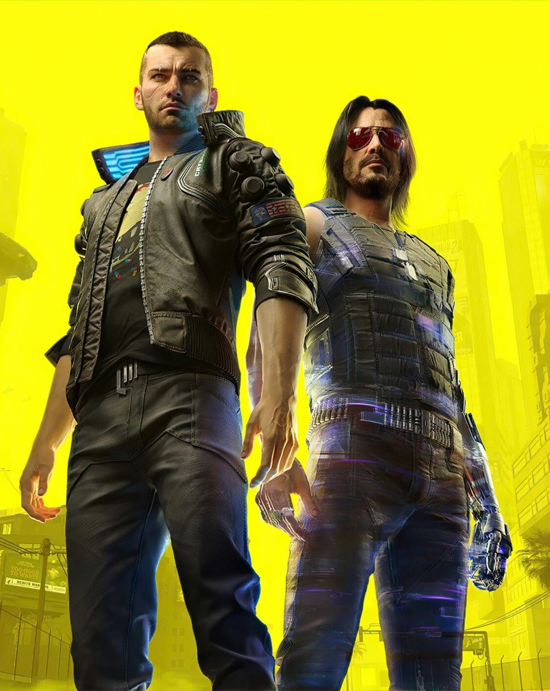
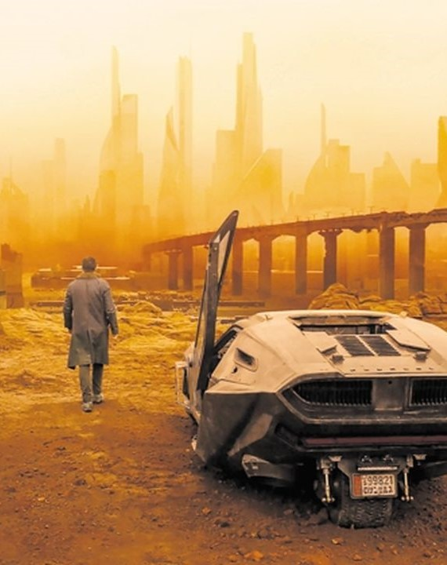
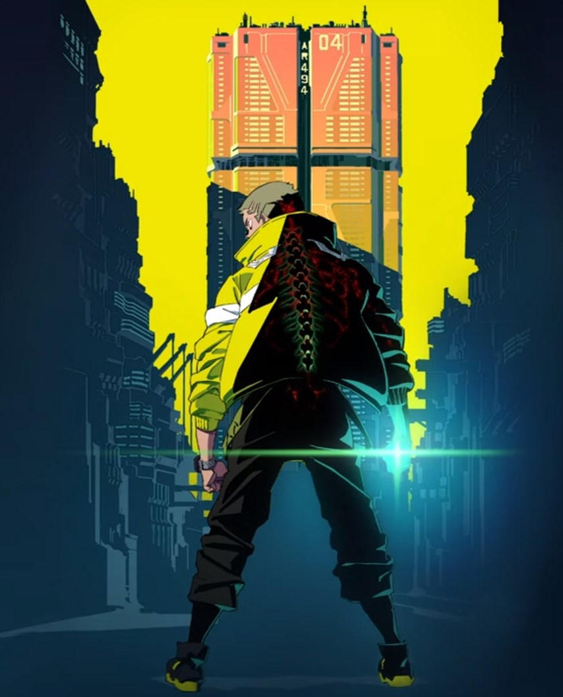

Cyberpunk 2077 est un jeu d'action-RPG immersif se déroulant dans Night City, une mégalopole dystopique du futur. Incarnez V, un mercenaire, et explorez ce monde ouvert riche en détails, en quêtes captivantes et en choix significatifs, dans un univers cyberpunk saisissant.
Jeu Video

Films
Dans Blade Runner, un film culte de Ridley Scott, un détective traque des répliquants rebelles dans un Los Angeles dystopique. Ghost in the Shell, adapté d'un manga, suit une unité spéciale contre le cyber-terrorisme.

Série
Edgerunners est une série animée se déroulant dans l'univers de "Cyberpunk 2077". Elle suit un groupe de marginaux à Night City, luttant pour leur survie dans une métropole futuriste. Avec une animation captivante et des histoires palpitantes.